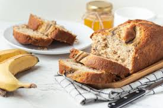

Banana Bread
Ingredients
- 3 ripe bananas, mashed
- 1/3 cup (75g) melted butter
- 1/2 cup (100g) sugar (adjust to taste)
- 1 egg, beaten
- 1 teaspoon vanilla extract
- 1 teaspoon baking soda
- Pinch of salt
- 1 1/2 cups (190g) all-purpose flour
Steps
- Preheat your oven to 350°F (175°C).
- Butter or line a 9x5 inch loaf pan.
- In a large mixing bowl, mash the bananas with a fork until smooth.
- Stir the melted butter into the mashed bananas.
- Mix in the sugar, beaten egg, and vanilla extract.
- Sprinkle the baking soda and salt over the mixture and stir to combine.
- Add the flour and mix until just combined (don’t overmix).
- Pour the batter into the prepared loaf pan.
- Bake for 50–60 minutes, or until a toothpick inserted into the center comes out clean.
- Let cool in the pan for a few minutes, then transfer to a wire rack to cool completely.
- Slice and enjoy!